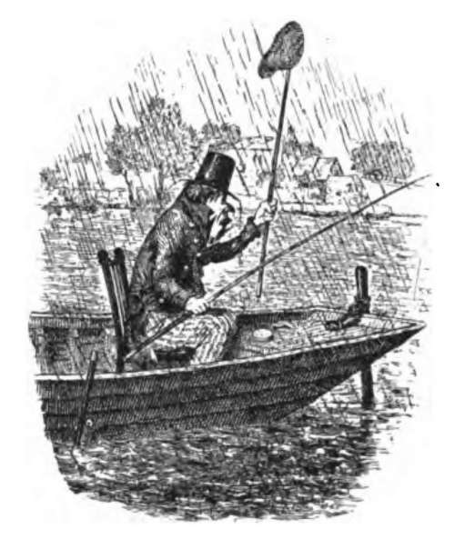

Chapter XX. Angling For Bream
Description
This section is from the book "Fishing", by Horace G. Hutchinson. Also available from Amazon: Fishing.
Chapter XX. Angling For Bream
In fishing for bream I have found the same kind of tackle and baits as referred to in my notes on tench fishing answer very well. It is quite a mistake to suppose that because bream grow to many pounds in weight very stout tackle is necessary. I have caught great numbers of fine bream up to six pounds on a tapered drawn gut fly cast and small hooks (No. 9 or 10). Although bream will become cautious in small waters where much fished, they have a way of helping the angler in their capture by rooting about in the mud, which makes the water muddy, and the fish cannot see the angler or his tackle; they also set free air-bubbles, and where many of these are seen coming to the surface it is probable some bream are at work below. Many kinds of ground baits are recommended for the ground-feeding fish, some of them of a very unpleasant nature; but I advise anglers to avoid all which are of an offensive character, I mean to human beings-we should take care not to bring discredit on our sport. A ground bait made of bread, bran, pollard, and boiled potatoes worked into balls with a little water, answers for all kinds of ground-feeding fish, and is sweet and clean to use. Some bream anglers have great faith in a little linseed oil-cake being added to the ground bait. For hook baits, worms, paste, and gentles are the chief; the great takes of bream made in the Norfolk rivers and broads are generally got with large worms as bait, after ground-baiting freely with lobs. In still water, fishing for bream and other fish, I often use a float which is leaded, so that it stands upright in the water with but an inch of quill showing, and a red cap; this enables you to dispense with all but one or two very small shot on the line, and the bait sinks slowly and more naturally, but this plan is of no use in waters which contain many small fry-there you must sink the bait as quickly as possible, and even then a small perch will often follow and take it. River bream give better sport than lake or pond fish, as the current pressing on the broad side of the fish, greatly increases the strain on the tackle. The largest English bream I have any knowledge of, as authenticated, is that mentioned by my old friend, Frank Buckland, in his " Natural History of British Fishes," where he tells us that "when at Norwich in August 1869, my friend, Dr. Norman, took me to the shop of Mr. T, E. Gunn, taxidermist, to see a bream which weighed nf lbs., and measured 2 feet 2 inches in length from the nose to the fork of the tail, and over 10 inches in depth." This fish was caught in a pond, about half an acre in extent, at Beeston Regis, near King's Lynn. Buckland says that a gentleman told Mr. Gunn that he had put it into the pond when very small, fifty years previously. If this is true, I mean as regards the age of the fish, it is very interesting. Dr. Norman told me about the fish in 1880, and about the enormous takes of bream made by local anglers, who used very primitive stout tackle, but knew the habits of the bream, and when and where to fish for them-usually at daybreak. The angler who visits East Anglia for bream fishing should, if possible, get one of the few professional fresh-water fishermen to show him the ropes, as although bream abound in all the rivers and broads they want both finding and catching, i.e. the fish of any size, say from a pound upwards-almost everywhere the so-called white bream or bream flat is to be caught. Buckland says: "Besides the common bream there are two other species, viz., the white bream or bream flat (Cyprinos blicca) and the Pomeranian bream. It is rather a bold thing to say, but I believe we have only one bream, viz., Abramis bramay and that the fish called silver bream, white bream, and bream flat is really the common bream. I know that English, French, and German ichthyologists give the white bream or bream flat as a separate species with differences in the teeth and fin rays and scales, but it is difficult to know what to believe, as the ichthyologists almost all differ from, where they do not copy, one another. Since writing these lines I have examined several English, French, and German works, and they all differ; I have also carefully examined a very fine 5-lb. bream, and find that not a single writer describes it correctly, as regards number of fin rays or number of scales. I am making further inquiries, and hope to be able to say something more on this very interesting point. It is, to say the least, curious that if the common bream and the bream flat are not the same species, one is never found in a water without the other; at least, I never heard of any. I think Yarrell, or Couch, says that a clergyman reported that the bream flat is caught in some parts of the Cam-but so are big bream. There is a greater difficulty in regard to the difference said to exist between the teeth of Abramis brama and Abramis blicca.
At spawning time, in the female bream, the skin veins are much congested with blood, giving the fish a very rosy appearance; the much thinner light-grey coloured male fish have the little pearly warts so common to the coarse fish at the spawning season, and are very rough to the touch. They spawn between May and July on water plants; the pale yellow, very small eggs, number from 200,000 to 300,000. They are very timid fish, and said to be so frightened by noises that in some parts of Sweden they do not ring the church bells when the bream are spawning for fear of alarming them.
The bream is found all over Europe. In the Caspian Sea the annual catch amounts to over fifty million pounds in weight, which is partly salted, partly dried. The roe is made into a kind of caviar. Some German writers consider a good sized bream in the winter is at least as good as the carp for food.
The mouth of the bream is provided with a bellows-like arrangement for shooting out the lips, something in the way the hood on a perambulator opens and shuts. In consequence of its very deep shape, which has been well likened to a bellows, the bream has almost to stand on its head when taking a bait off the bottom; so that, in fishing with a float with the bait just on the bottom, when a bream bites, the angler sees his float rise and then fall flat on the surface as if there were no lead on the line. He should wait until the float moves off before tightening on the fish. A big bream makes a good fight on fine tackle and a light rod. I often use a 12-foot light bamboo with a long fly top. I once had a curious experience when fishing for bream. It was getting dusk, when my float disappeared suddenly. I thought that was a tench or eel, anything but a bream, and struck; it proved to be a heavy fish, and I was compelled to give it all the line it wanted, and after getting it in a few yards, off it would go again. This went on for some time, and at last something came to the top, which, in the failing light, looked like the head of an eel making little jerks along the surface and then disappearing. After some twenty minutes, or what seemed like that time, I got the fish near enough to see that it was a great bream hooked by the tail. He was about 6 lbs., one of the largest I ever caught, and I let him go again for showing such a good fight-as he was in a piece of water which I rented, the knowledge that I might catch him again if I let him live to fight another day, helped him to gain his liberty. I think there is no doubt that roach and rudd occasionally cross with bream, and then we get a fish which has distinct modifications in fin-structure-the peculiar long anal fin of the bream is much shortened, the tail is smaller, and the long lower lobe far less conspicuous.
Bream are interesting fish to have in a pond or small lake, as they feed freely and show themselves a good deal near the surface on bright warm days but a bird flying over the water or a sudden noise sends them all down instantly.
Since writing the above I have procured from Norfolk specimens of what are universally called bream flats or white bream in Norfolk and Suffolk; they ranged in size from an ounce or two to about two pounds. I sent them to Mr. G. A. Boulenger, F.R.S., of the Natural History Museum, South Kensington, who has been most kind in giving me information. He said the fish were all bream except one small one, which was a bream flat. This proves conclusively that the fish so universally called bream flat in Norfolk is, as I have always maintained, the true bream. It may be asked, What then is the bream flat Mr. Boulenger found among those you sent to him ? I think that it will prove to be not a distinct species at all, but a hybrid, possibly with the rudd; the true bream has a single row of teeth, the bream flat of the ichthyologists has a double row, or rather there are two small teeth under the larger ones on the inside of the bone on each side. Now, the rudd has these same two extra teeth on each side. Anyway, I have proved conclusively that the bream flat of Norfolk is, in the great majority of cases, the true bream, for, as Mr. Rudd, of Norwich, the well-known angler and fishing tackle-maker, says, " Norfolk anglers call all small bream 'bream flats' up to say i lb. in weight."

Continue to: